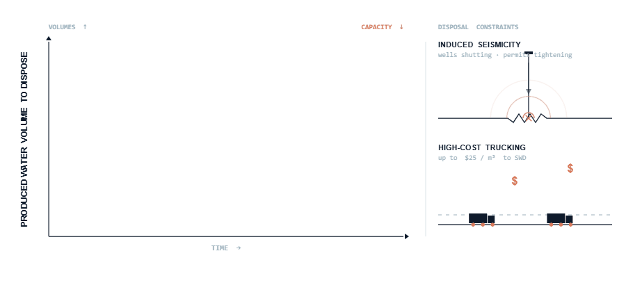
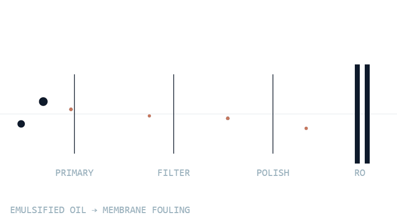
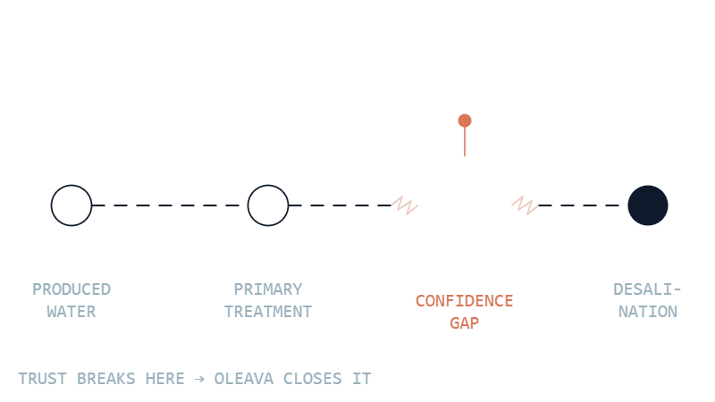
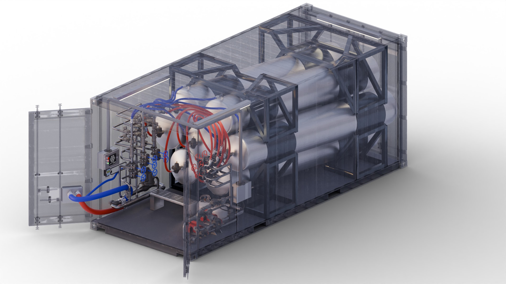
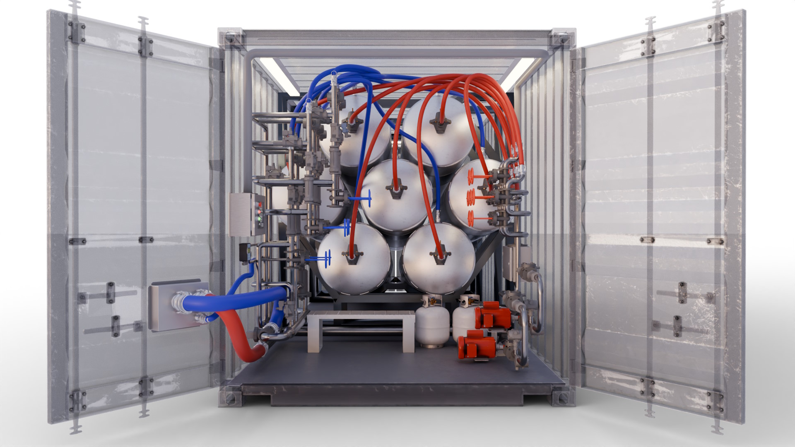
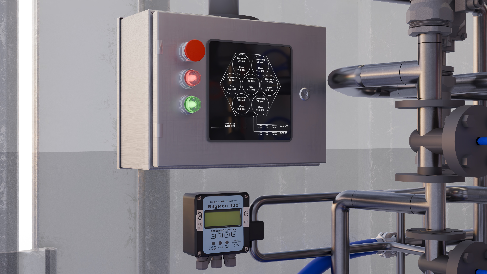
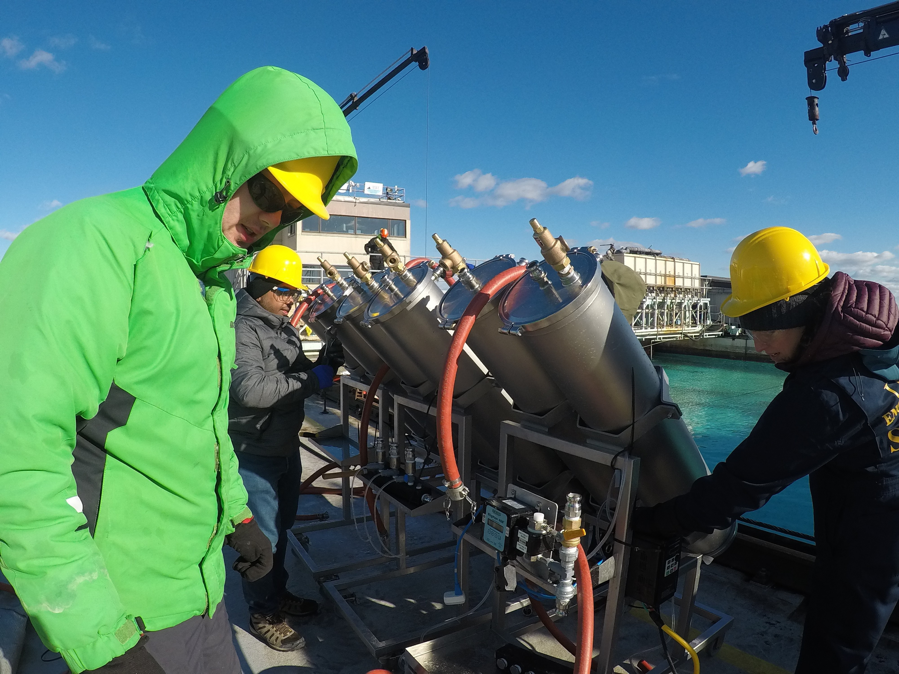
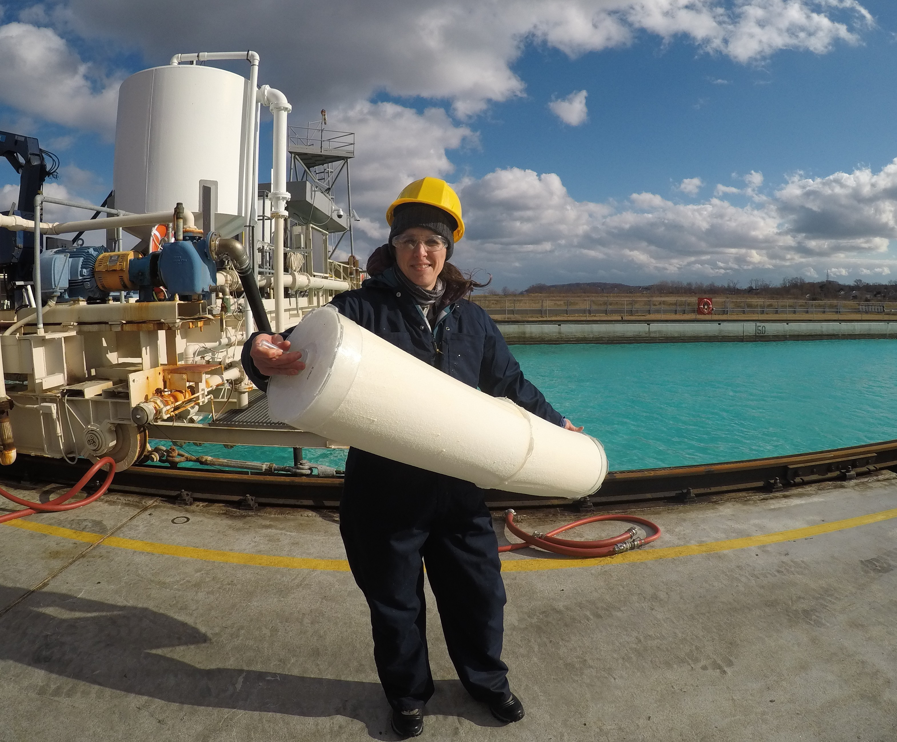
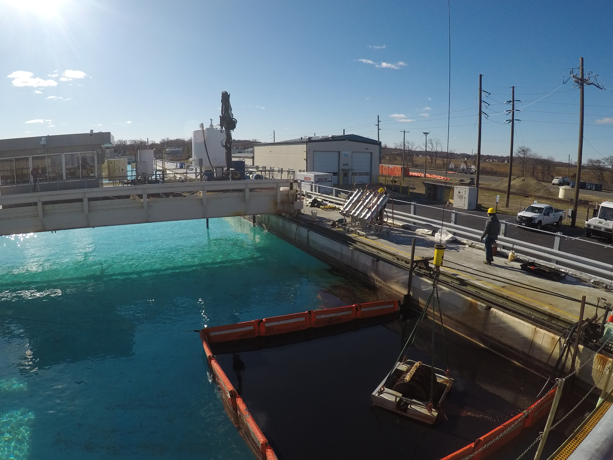
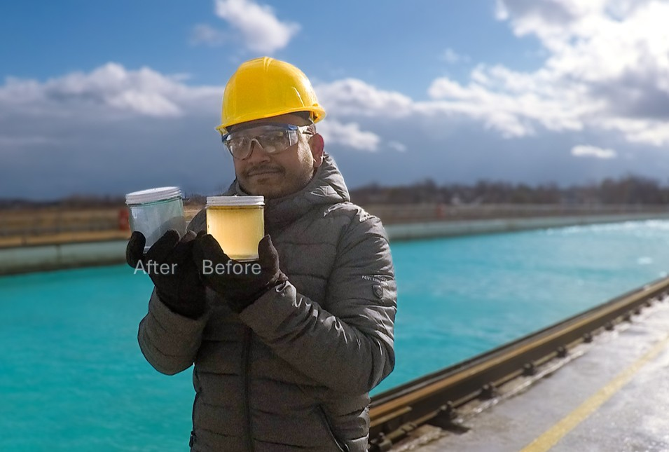

01
Puwaner Guo
Chief Executive Officer · Materials SME
Co-FounderProduced water is one of the largest and fastest-growing infrastructure burdens in the U.S. energy industry. Today, much of it is treated for bulk oil removal, transported, and injected underground. With disposal constraints and heightened pressure on freshwater supplies, operators are seeking more sustainable and treatment-focused pathways to reuse.
A major barrier to reuse is the residual emulsified oil that slips through conventional oil-water filters, which destabilizes desalination systems and makes reuse-grade treatment too unpredictable to finance and operate at scale. Oleava addresses this hidden failure point with a modular tertiary polishing step that captures residual oil before advanced treatment or surface discharge, turning produced water management more reliable and economical.
The U.S. Permian Basin produces more water than any oil basin on Earth, around 22 million barrels, with the average well now lifting close to 4 barrels of water for every barrel of oil. That volume is projected to reach 26 million barrels per day by 2030. This is where disposal burden, freshwater scarcity, and reuse urgency are most concentrated and where operators are already under the most pressure to find a better solution.
Upstream and midstream operators generate enormous daily volumes of produced water that can no longer be quietly disposed of. Permian operators already route a rising share of produced water back into completions — heading toward 80%+ by 2030. Every recycled barrel cuts injection, easing seismic pressure on disposal formations, and frees a barrel of groundwater for households, farms, and power. Treated produced water might also become a revenue-bearing resource through beneficial reuse.

Existing treatment infrastructure remove the 'free' oil, but not all of residual 'emulsified' oil, which damages downstream assets, raises operating cost, and makes desalination technologies harder to trust. Oleava captures those before reaching desalination or discharge points, giving operators a low-cost wedge between frac recycling today, disposal reduction, and beneficial reuse tomorrow.

We engineered the platform for targeted emulsified oil capture with minimal operator burden.
Our goal is to define a new operating standard for produced water reuse: treatment that is intelligent, service-backed, performance-driven, and reliable against field variabilities. Oleava provides a modular, optimized system to transform a stranded liability into a responsible water infrastructure, that operators and communities can commit to with confidence.

Oleava slots between conventional oil removal and desalination, at the critical point where residual emulsified oil can destabilize downstream treatment. Our modular polishing platform strengthens the existing treatment train without forcing operators to replace the infrastructure that already works.
Designed as a modular, small-footprint, sensor-equipped unit, Oleava combines targeted oil capture, low-energy operation, and operator-friendly maintenance in one compact package. Our piloting units are ready for real site deployment today, enabling hands-on evaluation of our benchmark performance, with a clear, scalable path to repeatable commercial deployment.
Bulk oil, solids, and free hydrocarbons are removed through primary separation, secondary treatment, and conventional polishing (where used), leaving residual emulsified oil in the produced water stream.
Targeted removal of the residual emulsified and dissolved oil fractions before they disrupt downstream treatment economics, membrane performance, and reuse reliability.
Cleaner, more predictable feedwater lowers membrane fouling risk and supports consistent performance and operating economics that hold up under technical and commercial diligence.
A robust treatment train for consistently producing higher quality, reuse-grade water to route toward beneficial industrial and agricultural end-uses or meet evolving discharge standards with confidence.








No system replacement. No complicated training. Oleava closes the gap between your existing treatment train and your reuse commitment, with benchmark performance metrics that hold up under diligence.
We are actively organizing pilots with operators to prove how reliable polishing reduces OPEX risk in produced water management. If you:
Our pilot units are ready for operators with small to large produced water assets. Initial field deployments can demonstrate treatment reliability, operating simplicity, and downstream protection at one site, then create a repeatable model across broader onshore portfolios and offshore facilities where compact footprint, low energy demand, and reduced operator burden are critical.
Steam-based recovery across North America's oil sands generates ~4.8M bbl/d of produced water that must reach ≤2 mg/L oil-in-water before re-injection. Our polishing platform is designed to support these high-throughput, oil-sensitive trains by improving residual oil control and feedwater consistency under variable operating conditions.
Tightening discharge regulations across the U.S. Gulf, North Sea, Middle East, and beyond are driving demand for compact, low-energy polishing at sea. Oleava units are custom-designed with these practical constraints in mind while simplifying integration and supporting compliance-driven polishing.
Beyond produced water, Oleava's filtration media is customizable for other oily wastewater streams where residual hydrocarbons, emulsions, limited space, and discharge or reuse requirements create reliability challenges. These applications include marine bilge and offshore deck drainage, refinery and petrochemical wastewater polishing, industrial process-water reuse, and emergency oil-spill response support.
Oleava is built for the teams responsible for managing difficult water: oil and gas midstream operators, offshore producers, environmental managers, and industrial water stakeholders who need performance they can trust in the field.
We are not a hardware handoff. From treatment-train integration to repeatable deployment, Oleava supports operators through every step of adoption. Our service-backed platform is designed to reduce technical risk, lower operator burden, and generate the field data partners need to scale with confidence.
Our pilot-scale system, DG2-3, is ready for evaluating residual oil capture, upset response, downstream protection,and integration fit before committing to broader deployment. DG2-3 is also built with simple, sensor-enabled monitoring that turns each pilot into a decision-ready data package without adding operational complexity.
Every produced-water stream is different, so we start side by side with your water management team. We characterize water chemistry, emulsion characteristics, operating conditions, treatment-train fit, and reuse objectives to define the right polishing strategy before anything is deployed, including integration planning, pilot scope, and clear success criteria we agree on up front for field validation.
We deliver field-ready polishing units built for rapid installation, compact-footprint operation, and integration with the infrastructure operators already run, with the flexibility to support customized expansion toward larger-scale reuse-grade treatment. Working alongside your operators, we put targeted oil capture to the test under real flow, chemistry, and upset conditions, without replacing the systems that already work.
Together we generate the operating evidence your stakeholders need for commercial confidence: water-quality monitoring, residual oil-removal performance, treatment stability, downstream-protection insight, and optimization recommendations. We hand back a practical data package your team, partners, and investors can use to evaluate scale-up.
Validated deployments become the foundation for a repeatable treatment architecture across assets. We partner through scale-up toward more reliable produced-water reuse, desalination-ready feed preparation, compliant discharge pathways, and fit-for-purpose recovery for industrial, environmental, and resource-management applications where permitted.
Oleava is a cross-disciplinary team built to solve produced water treatment from molecule to field deployment, combining expertise in polymer materials, process engineering, product design, desalination, operations, and data systems.
Chief Executive Officer · Materials SME
Co-FounderChief Technology Officer · Process Engineering
Co-FounderSensing & Performance Systems
Co-FounderField Engineering & Deployment
Co-FounderCommercial Partnerships & Capital
Co-FounderProduct & Manufacturing
Co-FounderWater Technology & Strategy
Co-FounderAfter primary oil removal and before desalination — the choke point where residual emulsified oil still creates fouling risk and weakens reuse reliability. Oleava does not replace upstream treatment; it completes it.
No. The positioning is entirely additive — Oleava inserts a modular polishing step at the critical gap rather than requiring a full-system replacement decision from operators or their capital partners.
TRL-6 demo readiness, with a pilot-ready form factor suitable for operator site visits and performance diligence. The modular architecture is designed for the path from single-site pilot to repeatable commercial deployment.
Operators exploring produced water reuse pathways, strategic partners evaluating deployment opportunities, and investors focused on industrial water infrastructure. All have a clear and direct entry point here.
Pilot discussions, site assessments, strategic partnerships, or investor introductions — reach out and someone from the team will respond directly.